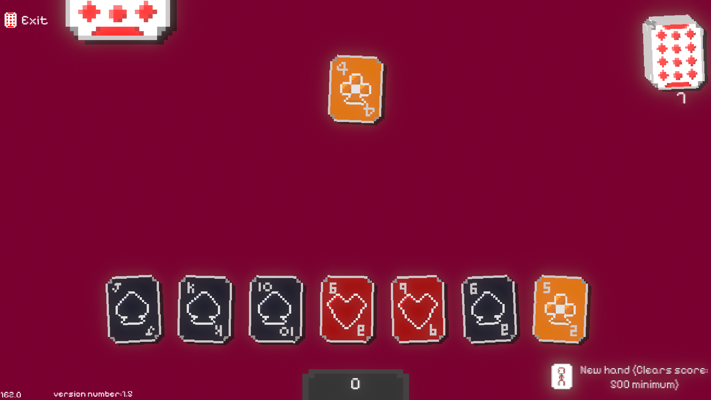

Card Thingy

A Balatro-inspired card game I've been making!
An expanded version of the card game Jacks, 2s and 8s, where you must find strategies to get as high a score as possible.
The basic rules of my game.
- To place a card, it must be the same value or suit as the top card. (However, in my game you can place a joker whenever, and place anything on them.)
- 2s force the other player to pick up 2 cards.
- An 8 means miss a turn, so if you place one, you skip the CPU's turn.
- If you can't place a card, you must pick one up, indicated by the large card at the top of the screen.
- Your goal is to deplete your cards.
There are many extra things on top of these rules in the game, but they are for you to learn.
Download the game — Windows build.
← Back to home